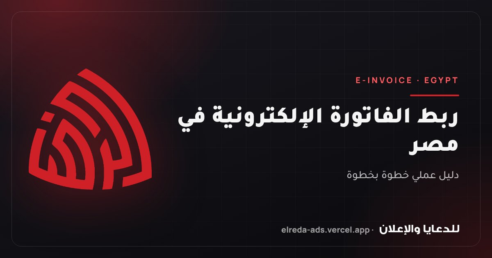

الخلاصة في 30 ثانية
- أغلب مشاكل الطباعة سببها الملف، لا المطبعة: ألوان باهتة، أو صور مبكسلة، أو كلام مقصوص، أو خط متغيّر.
- قبل الإرسال تأكد من 6 أشياء: CMYK، و300 DPI، و3 مم Bleed، وهامش أمان، وخطوط مضمّنة، وبروفة.
- أرسل الملف بصيغة PDF للطباعة، بالمقاس النهائي مع زيادة القص.
- اطلب بروفة وراجعها قبل طباعة الكمية، لأن تصحيح البروفة أرخص كثيرًا من إعادة الطباعة.
لماذا تختلف المطبوعات عن التصميم على الشاشة؟
الشاشة تعرض الألوان بالضوء، والمطبعة تكوّنها بالحبر على الورق. والشاشة تعرض الصورة بحجم مريح للعين، بينما الطباعة تكشف كل نقطة فيها. ولذلك قد يبدو التصميم مثاليًا على الموبايل، ثم يخرج من المطبعة بألوان مختلفة أو صورة ضبابية أو حافة بيضاء على جانب الكارت.
هذه القائمة تجمع المراجعات التي نقوم بها على أي ملف قبل أن يدخل المطبعة. التزم بها وستتجنب أغلب المفاجآت.
1. هل الملف بنظام ألوان CMYK وليس RGB؟
الشاشات تعمل بنظام RGB (أحمر، أخضر، أزرق)، والمطابع تعمل بنظام CMYK (سماوي، أرجواني، أصفر، أسود). بعض ألوان RGB الزاهية، خصوصًا الأخضر الفسفوري والأزرق الكهربائي والبرتقالي القوي، لا يمكن إخراجها بالحبر، فتخرج باهتة.
2. هل الصور بدقة 300 DPI على المقاس الفعلي؟
الدقة تعني عدد النقاط في كل بوصة. الشاشة تكفيها 72 نقطة، لكن الطباعة القريبة من العين (كروت، بروشور، منيو) تحتاج 300 نقطة في البوصة على المقاس الذي ستُطبع به. صور الواتساب ولقطات الشاشة والصور المنقولة من السوشيال ميديا تكون مضغوطة وبدقة منخفضة، فتظهر مبكسلة.
3. هل تركت 3 مم زيادة للقص (Bleed)؟
المقص في المطبعة لا يقص على الخط بالضبط في كل نسخة، وقد ينحرف جزءًا صغيرًا من المليمتر. لو كانت الخلفية تنتهي عند حد التصميم بالضبط، ستظهر شعرة بيضاء على حافة بعض النسخ.
4. هل النصوص بعيدة عن الحافة بهامش أمان؟
نفس انحراف القص الذي يُظهر الحافة البيضاء قد يقص أيضًا جزءًا من رقم تليفون أو حرف من الاسم لو كان قريبًا من الحافة.
5. هل الخطوط مضمّنة في الملف؟
لو أرسلت ملف تصميم يعتمد على خط غير موجود على جهاز المطبعة، فسيستبدله البرنامج تلقائيًا بخط آخر، وقد تتفكك الحروف العربية أو يتغير شكل التصميم بالكامل.
6. هل طلبت بروفة قبل طباعة الكمية؟
خطأ إملائي واحد في رقم التليفون على 1000 كارت يعني 1000 كارت لا يمكن استخدامها. والبروفة تكشف أيضًا اختلاف الألوان على الورق الحقيقي، وهو ما لا تُظهره الشاشة.
مقاسات شائعة يجب أن تعرفها
| المطبوع | المقاس النهائي | مع زيادة القص (3 مم) |
|---|---|---|
| كارت شخصي | 90 × 50 مم (الشائع في مصر) | 96 × 56 مم |
| فلاير A5 | 148 × 210 مم | 154 × 216 مم |
| ورق رسمي / بروشور A4 | 210 × 297 مم | 216 × 303 مم |
| بوستر A3 | 297 × 420 مم | 303 × 426 مم |
| ظرف DL | 110 × 220 مم | حسب قالب الظرف من المطبعة |
| رول أب | غالبًا 85 × 200 سم | اسأل المطبعة عن المساحة الإضافية للحامل |
أي ورق وتشطيب تختار؟
| الاستخدام | وزن الورق الشائع | ملاحظات |
|---|---|---|
| ورق رسمي (Letterhead) | 80 – 100 جم | يمر في الطابعات المكتبية بسهولة |
| فلاير وبروشور | 115 – 170 جم | الأثقل يعطي إحساسًا بجودة أعلى |
| غلاف كتالوج أو منيو | 250 – 300 جم | غالبًا مع سلفنة لحمايته |
| كارت شخصي | 300 – 350 جم | تشطيب مط أو لامع، ويمكن إضافة UV موضعي |
السلفنة المط تعطي مظهرًا هادئًا وفاخرًا ولا تعكس الضوء. السلفنة اللامعة تُظهر الألوان أقوى. والـ Spot UV طبقة لامعة على جزء محدد (مثل الشعار) فوق سطح مط، فتعطي تباينًا مميزًا عند اللمس والنظر.
قائمة المراجعة النهائية قبل الإرسال
- نظام الألوان CMYK، والنصوص السوداء أسود 100% (K).
- كل الصور 300 DPI على المقاس الفعلي (أو 100 إلى 150 DPI للمطبوعات الكبيرة).
- زيادة قص 3 مم من كل جانب، وعلامات القص ظاهرة.
- لا نصوص ولا عناصر مهمة في آخر 3 إلى 5 مم من الحافة.
- PDF للطباعة بخطوط مضمّنة أو محوّلة إلى Outlines.
- مراجعة الأسماء والأرقام والعناوين حرفًا حرفًا.
- بروفة مُعتمدة قبل طباعة الكمية.
أسئلة شائعة
لماذا خرجت ألوان المطبوع مختلفة عن الشاشة؟
غالبًا لأن الملف كان بنظام RGB أو لأن الشاشة نفسها غير معايرة. بعض ألوان الشاشة لا يمكن طباعتها بالحبر، ونوع الورق والسلفنة يغيّران شكل اللون أيضًا. البروفة المطبوعة هي الطريقة الوحيدة لرؤية اللون الحقيقي قبل الكمية.
هل يمكن طباعة تصميم معمول على Canva؟
نعم، بشرط تصديره كـ «PDF للطباعة» مع تفعيل علامات القص وزيادة القص، واستخدام صور بدقة كافية. وراجع الألوان بعد الطباعة، لأن Canva يصمم أساسًا بنظام RGB.
ما أفضل صيغة لإرسال الملف للمطبعة؟
PDF للطباعة (يفضل PDF/X) بالمقاس النهائي مع زيادة القص، وبخطوط مضمّنة. وتجنّب إرسال JPG أو لقطات شاشة للتصاميم التي تحتوي نصوصًا.
ما معنى Bleed باختصار؟
هي مساحة إضافية، عادةً 3 مم، تمتد فيها الخلفية خارج حدود التصميم من كل جانب، حتى لا تظهر حافة بيضاء إذا انحرف القص قليلًا.
هل أحتاج بروفة لكل طلب طباعة؟
للطلبات الجديدة أو الكميات الكبيرة أو الألوان المهمة للعلامة: نعم. أما إعادة طباعة نفس التصميم المعتمد سابقًا على نفس الورق، فيمكن الاكتفاء بمراجعة PDF.
مش فاضي تراجع كل ده؟
ابعتلنا ملفك، نراجعه ونجهّزه للطباعة ونطبعه لك بالورق والتشطيب المناسب، مع بروفة قبل الكمية.
مقالات أخرى قد تفيدك

ربط الفاتورة الإلكترونية في مصر: الخطوات والمتطلبات خطوة بخطوة
دليل عملي لربط الفاتورة الإلكترونية بمنظومة مصلحة الضرائب المصرية: من الملزم، والأوراق المطلوبة، والتوقيع الإلكتروني، وتكويد الأصناف EGS وGS1، والربط بنظام محاسبي، وأشهر أسباب رفض الفواتير.
5 أخطاء شائعة في تصميم الشعار تُضعف علامتك التجارية (وكيف تتجنبها)
أكثر 5 أخطاء تُضعف الشعار: التفاصيل الزائدة والألوان الكثيرة والخط صعب القراءة والنسخة الواحدة وملف JPG فقط، مع اختبارات بسيطة وقائمة تدقيق قبل اعتماد شعارك والملفات التي يجب أن تستلمها.